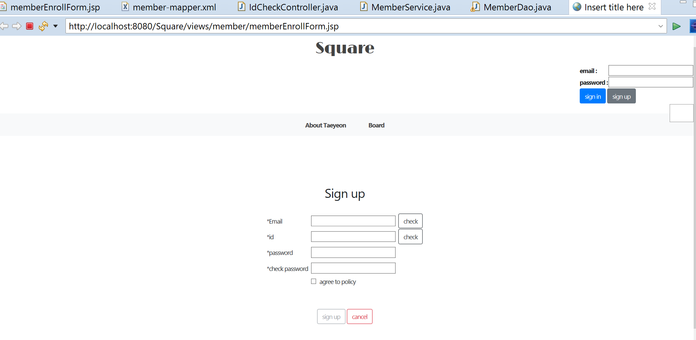

PickEco | Mobile application 2022.9 – 2022.12
Test Developer and Frontend Developer
Collaborating with Company PickEco, Creating a Mobile Application as per the client’s requirements
- Created test cases, and perform testing on a prototype to find bugs and inconsistencies across OS
- Completed unit testing in React
- Developed an app using React Native, and simulated using Expo Go
- Managed the project using ZenHub in an Agile environment
- Designed a clean and user-friendly GUI and created a prototype of an app using Figma
Calculate the average reaction time 2022.7 – 2022.7
Application to calculate the average reaction speed of the user after clicking the button three times.
- Used JavaScript, CSS3, HTML5
- Git: https://github.com/Taeyeon-dev/ReactSpeed.git
Square | Website 2022.5 – 2022.6
Square is a forum website to discuss various opinions, share information, and reply. It allows users to write, read, edit, delete posts, and upload files.
- Developed a Java web application.
- Dynamic web pages that ensure the adaptability of updated data by using JavaScript and jQuery.
- Used Asynchronous JavaScript and XML(Ajax) to ensure the users have unique emails and ids while checking the existing data.
- Git: https://github.com/Taeyeon-dev/Square.git
Mian page

Sign in Page
ID check

Set the sign up button as disabled if id is not available.
Create function idCheck when user click the check button
to call the ajax method (Which url is called and What value would send when asked).
Count the number of matching id values and if greater than 0, fail = "NNNNNNN" , or same with 0 success = "NNNNNY"
Book for you (BK4U) | Website 2021.6– 2021.8
BK4U is a book rental service website. Users select book genres of book. The admin checks the user’s interest and then sends several books randomly to the user.
- Developed and designed full stack Spring framework web application.
- Initiated a meetup board while enabling users’ various functions, such as setting up the schedule, limited attendance, and location using Kakao Map API.
- Developed website using software architectural Spring MVC pattern.
- Used MyBatis connected with Oracle to build a search function and request a page list.
- Git: https://github.com/Taeyeon-dev/BookForYou.git
ERD Diagram

USECASE Diagram